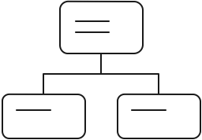

class: center, middle background-image: url(assets/icon-final.eps) <style> .left-column { width: 49%; float: left; } .right-column { width: 49%; float: right; } .right-column ~ p { clear: both; } .right-column ~ ul { clear: both; } </style> # DeisLabs: What's Cooking #### Taylor Thomas - Senior Software Engineer at Microsoft Azure --- # Who am I? - Senior Software Engineer in Microsoft Azure - Helm Core Maintainer - GitHub: [@thomastaylor312](https://github.com/thomastaylor312) - Twitter: [@_oftaylor](https://twitter.com/_oftaylor) - Kubernetes Slack: @oftaylor ??? - I'm a software engineer at Azure primarily working on the DeisLabs team (I'll explain what team that is in just a second). I used to work on AKS as well - So why listen to me? - I am in a lucky position where I work on Open Source and Microsoft so happens to pay me - I have been involved in this whole "Cloud Native" thing since almost the beginning and I enjoy helping people out. So what I talk about today will be focused on some of the open source projects my team is working on, but maybe they aren't the best technology choice for you. But I still hope you'll learn something from us and our experience. Feel free to ask me about any technologies and I will give you my best educated opinion about them --- background-image: url(assets/phippyandfriends.tiff) background-size: contain # What is this DeisLabs thing? ??? - Deis Labs is a shoutout to Deis, the organization where many of us started our journey into Kubernetes and Open Source. If you hadn't heard of Deis, it was a startup working on Kubernetes and containers tooling and was acquired by Microsoft - Some of the people on this team created Phippy and some of the other characters described here. - Our goal is to create great open source software and build healthy, diverse communities for those projects - Most people, when they hear about Microsoft doing open source, are fairly skeptical. I've had plenty of people come up to me and quote the whole "Embrace, Extend, Extinguish" thing. But what I love about our team is that our primary goal is running open communities. Most of our projects are technically owned by the CNCF and worked on by many other companies. Like I said before, I am going to talk about some of our projects and how they can help you, but I will give you honest opinions about our own projects and will talk about other technologies -- .middle[ .center[ ## https://deislabs.io ## https://github.com/deislabs ] ] --- # The Menu - Appetizers - Helm - Brigade - CNAB - Porter - VS Code Extensions - Palate Cleanser: The Future - Main Course: Your Choice or Chef's Choice ??? - Ok, I know this is a terrible dad joke/pun on the title of the talk but I couldn't help myself - I am going to do a talk that is probably a bit different than you are normally used to. I am going to give a brief overview about what each of these projects are and how they can help you. Then I'll give a brief look at the future projects to keep an eye out for and then we are going to do a "choose your own adventure." If there is a topic I mentioned that is of interest to most of you, we'll dig some more into it. Otherwise, if no one feels like any specific topic, I'll dive in to something I think could be helpful to the most amount of people - Because of the flexible nature of this, feel free to ask a question at any time! --- class: center, middle # Appetizers --- background-image: url(./assets/helm.svg) ??? - How many of you have heard of Helm? How many have used it? - And just out of curiosity, how many of you have gotten waaaaay to deep into it? --- class: center, middle ## The package manager for Kubernetes #### Helm is the best way to find, share, and use software built for Kubernetes  --- # Helm - What is Helm? - How and why do people use it? .footnote[.center[https://helm.sh]] ??? - So let's talk Helm. What’s Helm and why do people use it? It’s a package manager like Homebrew, apt, and yum. - Helm is now a CNCF incubating (and hopefully soon graduating) project - we donated the IP to the CNCF. - At Microsoft, we use Helm in AKS, azure dev spaces, azure pipelines, azure devops, and a whole host of other internal products - But let's talk a bit more about why Helm could be useful for you --- # Helm .left-column[ .center[  #### Manage complexity <img src="./assets/sharing.png" width="125"> #### Simple sharing ] ] .right-column[ .center[ <img src="./assets/updates.png" width="110"> <h4 style="padding-bottom: 33px; margin-top: -17px;">Easy updates</h4> <img src="./assets/rollbacks.png" width="125"> #### Rollbacks ] ] .footnote[.center[https://helm.sh]] ??? NOTE: Depending on how many people are really experienced with Helm, this could be trimmed or skipped - As you can see here, these are 4 of the biggest things Helm can help you with (though there are many more useful features). So let's dig into each one - Manage complexity: Charts can describe complex apps; provide repeatable app installs, and serve as a single point of authority - Easy updates: Take the pain out of updates with in-place upgrades and custom hooks. Basically, you can manage all of the Kubernetes lifecycle of your app with Helm (please note that we can't manage all of your app for you :D) - Simple sharing: Charts are easy to version, share, and host on public or private servers. Also, with the release of Helm 3, we also have library charts, which are reusable components/templates that can be shared to reduce copy/pasting - Rollbacks: This is related to the easy updates, but you also get the ability to rollback. You fat finger a config value or accidently deploy a bug? It is as simple as `helm rollback` - Something else to know is that Helm is easily extendible using plugins or the Go SDK --- background-image: url(./assets/brigade.svg) ??? - Stuff here --- # Brigade TODO .footnote[.center[https://brigade.sh]] --- background-image: url(./assets/cnab.svg) ??? - Cloud Native Application Bundles -> CNAB --- # CNAB TODO .footnote[.center[https://cnab.io]] ??? Focus this more on the open spec and save cool details for Porter --- background-image: url(./assets/porter.png) ??? - Porter is a tool for managing and installing your Bundles. CNAB is the spec, Porter is an implementation --- # Porter TODO .footnote[.center[https://porter.sh]] --- # VS Code Extensions TODO .footnote[.center[https://azure.github.io/vscode-kubernetes-tools/]] --- layout: false # The Future .left-column[ - WASM - Moar Rust - Brigade 2! - CNAB 1.0 Spec ] .right-column[ .middle[<img src="https://media1.tenor.com/images/a245032e943ceb833ca4328606d30e05/tenor.gif?itemid=3554959" width="500">] ] ??? - These are some of the things we are investigating or working on (I've added links where I can) --- # Main Course What interests you? Any topics or projects sound interesting?